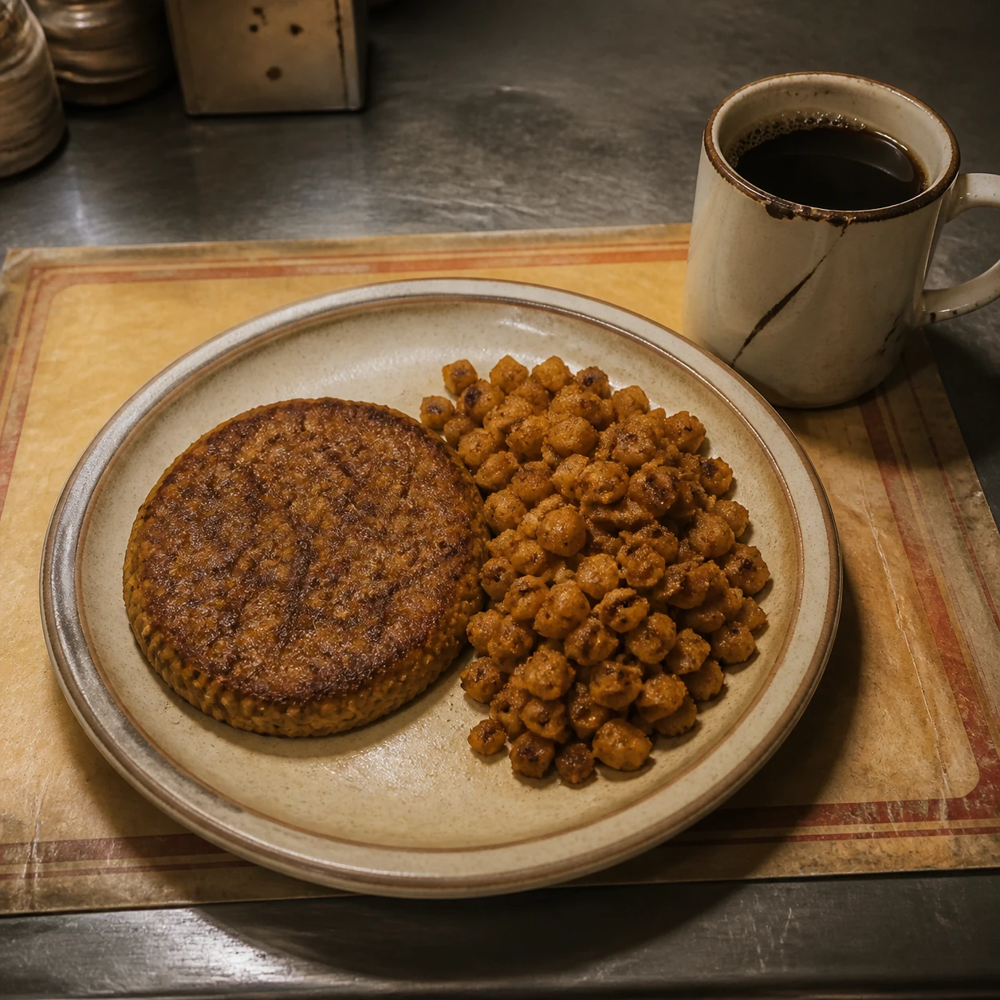

KIBBLE
RED-EYE KIBBLE PLATE
Cheeseburger-flavor griddle press, seasoned hash, hot black imitation coffee.
SERVING NIGHT CITY SINCE THE TRAINS STILL RAN
Six stools. One working griddle. Food honest enough to tell you what it is.
STILL HERE SOMEHOW
The Last Stop opened when the elevated line still carried shift workers across Watson. The line has been dead for years, the timetable is painted over, and half the old station is now rented by people who do not give surnames. Marcy still turns on the counter lights before midnight.
Nothing on this menu is fresh food. The cheap plates begin with Kibble. The better ones come from Generic Prepak sleeves and get finished on an actual griddle. If a meal looks like something your grandparents ate, that means the manufacturer did its job—not that a chicken was involved.
PICKUP OR BLOCK DELIVERY
Orders are cooked after payment clears. Estimated times are aspirational during brownouts.